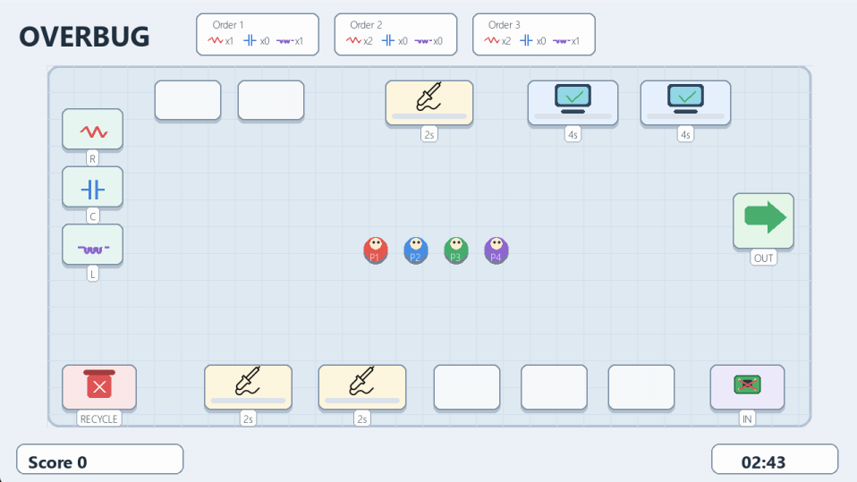

RTES913 - EOS - Overbug
Lab 3: Parallel Server Performance
Run two provided four-player servers in three configurations, work out how each is built, measure them, and explain which is better and why.
Before you begin
Runs on a PC or VM
Everything in this lab runs on one Ubuntu/Linux machine: the servers, the display, the input, and your measurements. It can be a PC or a VM, such as the Ubuntu VM from Lab 0. No Raspberry Pi is needed.
Before starting this lab, make sure you have:
- an Ubuntu/Linux PC or VM with at least four CPU cores (for a VM, at least four virtual CPUs), and
pygame-ceinstalled forLab3/display.pyandLab3/player.py; and - the provided
Lab3/servers/folder. Besides measuring these servers, you write one more server of your own (Report item 5).
This lab assumes you understand:
- basic C, UDP sockets, and POSIX threads with mutexes and condition variables;
- from Lab 1: tasks and thread IDs, CPU time versus wall-clock time, and context switches;
- that the scheduler decides which runnable task gets each CPU, and other runnable tasks wait in a run queue; and
- the six-byte
OBINinput packet from Lab 2.
By the end, you will be able to measure a running multithreaded program from the outside and use the numbers to explain when splitting work across threads helps, when it hurts, and what it costs.
System overview
Four players send input at the same time. Both servers do the three jobs in the diagram. How each one organizes them is for you to find out.
Keyboard simulator
player.py
Players 1-4 send OBIN input.
Provided Lab3/servers/
OBST packets.
Provided display
Lab3/display.py draws each OBST packet it receives.
1. Game rules and facility map
Both provided servers use this 16-station facility, its coordinates, and its rules. Lab3/overbug_world.h is the servers' authoritative layout, and the provided display has matching fixed constants. You do not change the game in this lab; the map is here so you can follow what the players and stations do while you run and measure the servers.

OBST.
Coordinate origin
The world origin
(0, 0) is the top-left corner. x increases rightward and y downward. In the fixed facility map, (x, y) is a rectangle's top-left corner; w and h are its width and height. The playable map begins at (70, 96) and measures 1140 x 540.
1-3: component bins
4: recycle
5: intake
6: shipping
7-9: welders
10-11: verifiers
12-16: tables
Only the three material bins have a component type. Tables, welders, verifiers, intake, shipping, and recycle use COMP_NONE; they store or process items but are not themselves a resistor, capacitor, or inductor.
| Marker / station | Type | Location and size | Action behavior |
|---|---|---|---|
1 bin_resistor | Material bin | (92, 160), 92 x 62 | An empty player picks an unlimited resistor. |
2 bin_capacitor | Material bin | (92, 246), 92 x 62 | An empty player picks an unlimited capacitor. |
3 bin_inductor | Material bin | (92, 332), 92 x 62 | An empty player picks an unlimited inductor. |
4 trash | Recycle | (92, 542), 112 x 68 | Drop any unlocked item; a passed board locked to an order must ship instead. |
5 intake | Board intake | (1058, 542), 112 x 68 | An empty player picks a new raw board. |
6 shipping | Shipping | (1092, 286), 92 x 84 | Accept a passed board locked to an order, score it, and replace that order. |
7 welder_1 | Welder | (304, 542), 132 x 68 | Store one board and one pending material; Solder completes the weld. |
8 welder_2 | Welder | (474, 542), 132 x 68 | Store one board and one pending material; Solder completes the weld. |
9 welder_3 | Welder | (574, 118), 132 x 68 | Store one board and one pending material; Solder completes the weld. |
10 verifier_1 | Verification computer | (786, 118), 136 x 68 | Accept one board and immediately mark it passed or failed. |
11 verifier_2 | Verification computer | (954, 118), 136 x 68 | Accept one board and immediately mark it passed or failed. |
12 table_1 | Table | (230, 118), 100 x 60 | Store or retrieve one item. |
13 table_2 | Table | (354, 118), 100 x 60 | Store or retrieve one item. |
14 table_3 | Table | (646, 542), 100 x 68 | Store or retrieve one item. |
15 table_4 | Table | (776, 542), 100 x 68 | Store or retrieve one item. |
16 table_5 | Table | (906, 542), 100 x 68 | Store or retrieve one item. |
Players and actions
xandyare the centre of the player's circular icon in the fixed 1280 by 720 world.- Players 1 to 4 start at
(560, 370),(620, 370),(500, 370), and(680, 370). - A player has an 18-pixel radius. The player centre stays between
x = 88..1192andy = 114..618, so the circle cannot leave the playable map. - If a move would put the player's circle inside a facility rectangle, the server cancels that move and leaves the player where it was. Players may pass through one another.
- Each player carries at most one item.
- A new Action press operates the nearest facility within 54 pixels of the player's centre, measured to the nearest edge of the facility rectangle. An empty player picks up from it. A carrying player places the item there if the facility accepts it, and otherwise keeps the item.
- At a welder, place a raw, soldering, or ready board and then one material. A new Solder press within 54 pixels of that welder immediately adds the material to the board.
How input updates the game
- Each
OBINpacket carries the full button state of one player at that moment. - Direction keys: the server uses the most recent packet of each player. The player keeps moving in that direction, at 185 pixels per second of time since the previous update, until a packet with a different state arrives. Because movement is scaled by the elapsed time (at most 0.5 s per update), the walking speed does not depend on how often the server updates.
- Action and Solder: a press is an Action or Solder bit that is 0 in a player's previous packet and 1 in the next. Holding the key does not press again; release and press again for another operation.
- In each update the server first moves every player, then performs the presses received since the previous update, in the order their packets arrived. Each player performs at most one press per update; further presses by the same player in that update are ignored.
Contested facilities
Presses are performed one at a time, in arrival order. When two players operate the same facility in one update, the press whose packet arrived first is performed first; the second press sees the facility as already changed.
Orders and round rules
- A verifier accepts a raw, soldering, or ready board and immediately passes it only when its resistor, capacitor, and inductor counts exactly match an unlocked order; otherwise it fails the board. If the board matches more than one unlocked order, the verifier locks the first one in
orders[], so identical orders are completed in their displayed order. - There are always three active orders. Each has an ID, a
req:[resistor,capacitor,inductor]requirement, and alocked_board_id. The server picks each requirement at random: 0-2 of each type and 1-4 components in total. Shipping a passed, locked board earns10 + 5 x total required componentspoints and creates a replacement order. - The overall timer stays at 180 seconds in every
OBSTpacket, but Lab 3 does not decrement it or end the game automatically. Press Esc to close the display session, then use Ctrl-C to stop the server. Recycling wrong or unwanted unlocked items increasesrecycledwithout a score penalty. A passed board locked to an order cannot enter recycle; it must go to shipping.
2. OBST display interface
An OBST packet is one UDP datagram that the server sends to the display after a game update. It holds the game state at that moment as JSON, with "packet_id":"OBST". Lab3/display.py owns the fixed facility map, so the packet carries only moving players, orders, and changing station state. (This is not the task_snapshot system call from Lab 1.)
{
"packet_id": "OBST",
"players_count": 4, "remaining_ms": 180000,
"score": 20, "completed": 1, "recycled": 0, "game_over": false,
"players": [{"id": 1, "x": 560.0, "y": 370.0, "held": null},
{"id": 2, "x": 620.0, "y": 370.0, "held": null},
{"id": 3, "x": 500.0, "y": 370.0, "held": null},
{"id": 4, "x": 680.0, "y": 370.0, "held": null}],
"orders": [{"id": 1, "req": [1, 0, 1], "locked_board_id": 0}],
"stations": [{"id": "table_5", "item": null},
{"id": "welder_1", "board": null,
"pending_material": null, "progress": 0.0},
{"id": "verifier_1", "item": null, "progress": 0.0}]
}| Field | Contents |
|---|---|
| Header, score, and retained timer state | packet_id, players_count, remaining_ms, score, completed, recycled, and game_over. Lab 3 keeps remaining_ms at 180000 and game_over false. |
players[] | One object per player: id, x and y for the player's centre, and held. |
orders[] | id, req:[resistor,capacitor,inductor], and locked_board_id. A value of 0 is open; a nonzero value is the passed board ID reserved for that order and means it is ready to ship. |
stations[] | Only changing state for tables, welders, and verifiers. The display looks up each id in its fixed facility constants, so station type and coordinates are not sent. |
| Station-state fields | Tables add item; welders add board, pending_material, and progress; verifiers add item and progress. Immediate welding and verification leave progress at 0.0. |
| Item value | null, a material {"kind":"material","component":"..."}, or a board with kind, board_id, state, counts, and locked_order_id. |
Provided display note
Lab3/display.py draws the same way as the Lab 2 display. Lab 3 preserves its timer and progress fields for compatibility, but does not calculate them: the timer stays at 03:00 and each progress value stays at 0.0 after an immediate operation.
3. The provided servers
Lab3/servers/ contains two complete servers, server_single and server_threads, built from the source files in the same folder. Both play the same four-player game. Each game update and each OBST packet also does a fixed amount of simulated CPU work, set by --game-work-ms and --tx-work-ms (50 ms each by default).
You will run them in three configurations:
| Name | Command |
|---|---|
| S1 | ./server_single --cpus 1 |
| T1 | ./server_threads --cpus 1 |
| T3 | ./server_threads --cpus 1,2,3 |
Replace the CPU IDs with cores that are idle on your machine. The examples leave CPU 0 for the display, player.py, and your measuring programs. How each server is built, and what the three configurations change, is for you to work out from the source code and from your measurements.
4. Build and run
cd Lab3/servers
makeRun ./server_single --help or ./server_threads --help for every option. Each server prints its process and thread IDs when it starts; press Ctrl-C to stop it. Every OBST packet carries a tick_id that counts game updates.
Start the display, one server, and the keyboard simulator, each in its own terminal:
# in Lab3
python3 display.py --host 127.0.0.1 --port 17667
# in Lab3/servers
./server_threads --cpus 1,2,3
# in Lab3
python3 player.py --server 127.0.0.1player.py sends all four players' current key states at 60 Hz. Its window must have keyboard focus.
Only one program can receive the OBST packets sent to a UDP port. To read them with your own program, stop display.py or send them to another port with the server's --display-port option.
| Player | Move | Action | Solder |
|---|---|---|---|
| 1 | W / A / S / D | Space | Left Shift |
| 2 | Arrow keys | Right Ctrl | Right Shift |
| 3 | I / J / K / L | O | P |
| 4 | 8 / 4 / 5 / 6 | 0 | 7 |
Play S1, T1, and T3 by hand before you measure anything, and write down what you notice.
5. What to measure
Measure every item below 10 times for each of S1, T1, and T3. For A2 and A3, put the values from all 10 runs together and report their median and range; for the other items, report the median and range of the 10 results. Choosing tools and methods is part of the assignment. Measure the servers from the outside; do not change their code.
Measure under these conditions:
- Input. Write your own input program that sends
OBINpackets for all four players at 60 Hz, in the same format asplayer.py. Use the same program and settings for S1, T1, and T3, and keep it running for the whole measurement. - Duration. Let the server run at least 3 seconds before you start, then measure for at least 30 seconds.
A. What the players see
| # | Item | Definition |
|---|---|---|
| A1 | OBST packet rate | OBST packets received per second. |
| A2 | OBST packet interval | Time between consecutive OBST packets. |
| A3 | Key-press latency | From the moment your input program sends a direction-key press until the first OBST packet that shows the player moving in that direction arrives. Choose a direction in which the player can move. |
B. Inside the server
Measure B1-B4 for each thread and B5 for the whole server.
| # | Item | Definition |
|---|---|---|
| B1 | CPU usage | CPU time used by the thread divided by wall-clock time. |
| B2 | CPU placement | Which CPU or CPUs the thread actually ran on. |
| B3 | Context switches | Voluntary and involuntary context switches per second. |
| B4 | Run-queue wait | Time the thread was ready to run but waiting for a CPU, divided by wall-clock time. |
| B5 | Total CPU usage | CPU cores used by the whole server. |
6. Report
- Architecture. Draw a flowchart of each server showing its threads, what each thread does, and the data they share. Mark the critical sections and explain how each one is protected. Then trace one key press from its input packet to the
OBSTpacket that shows it. - Method. For each item in tables A and B: what you ran, where it ran, and how you turned its output into the number you report, plus the checks that show your method is correct.
- Results. One table with every item for S1, T1, and T3.
- Analysis. Explain your results. Then say which configuration is better, under which conditions, and why, supported by your measurements.
- Your own server. Write one more server with a different design, such as a different split of work among threads or processes, or a different way of handling data between them. Keep the same game rules, packet formats, and simulated work (
--game-work-ms 50,--tx-work-ms 50). Measure it the same way as S1, T1, and T3, add it to your results table, and compare. It does not need to be faster; what matters is whether your measurements match your explanation.
7. QA
Questions
- What is the difference between concurrency and parallelism? Explain it with your measurements of S1, T1, and T3.
- Did you test on a VM or on a Linux PC? When you chose CPUs, did the threads really run on different physical CPUs?
- T1 and T3 are implemented with threads. If they used processes instead, what would need to change?
- Following the previous question, would the performance be different? Why?
- What other insights do you gain from this lab?